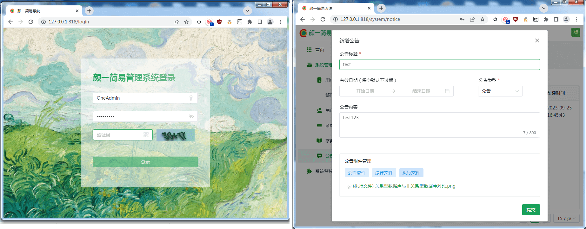
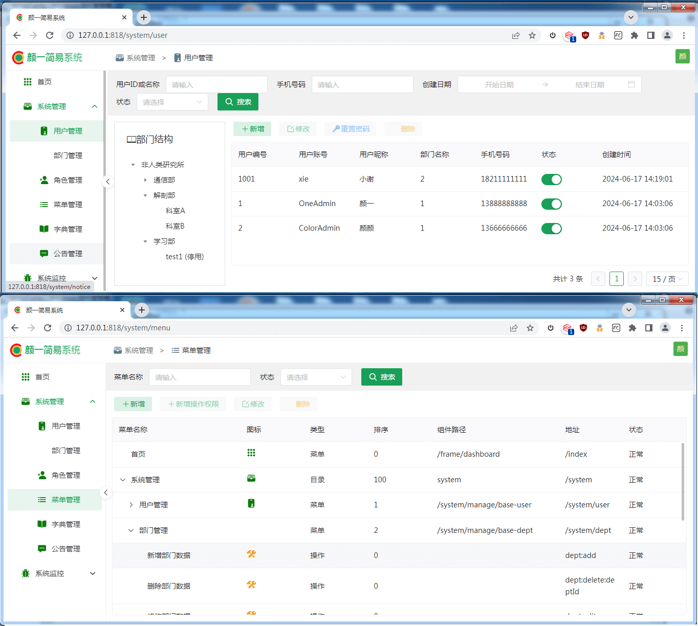
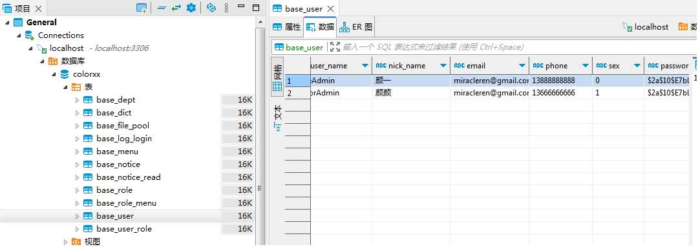

基于SpringBoot，Spring Security，Vue & naiveUi 实现的前后端分离权限管理简易系统。
学习 https://github.com/miracleren/colorOne/tree/main 的项目。
本篇文章包含上述项目的学习、效果展示及相关知识点。
前端：vue3、NaiveUI；
后端：SpringBoot3，java17，Spring Security，MybatisPlus，MySql，redis；
sping boot3 最低版本jdk17；
开发工具：SpringToolSuite4 或 IDEA；
MySQL可视化工具： DBeaver；


本机 mysql 8.0.30。
请确保mysql、redis启动。
在MySQL中，-（两个连续横杠 ）注释样式要求第二个破折号后跟至少一个空格或控制字符（例如空格，制表符，换行符等）。system.sql文件中注释格式不对，如 ------------------------------- 等地方第二个破折号后要加上空格。
修改后的system.sql文件见 https://github.com/Gitxieada/Learn_Miracleren_ColorOne 。
在 sql 目录下执行以下命令：
使用net start命令查看所有正在运行的服务，其中包括MySQL服务。若没有MySQL服务，则使用net start mysql启动。
colorxxmysql -u root -p # 进入到了MySQL的命令行工具 mysql> create database colorxx character set utf8mb4 collate utf8mb4_0900_ai_ci; # 查询数据库是否创建成功 mysql> show databases; mysql> use colorxx Database changed source ./system.sql; source ./initial data .sql;

知识点：
utf8mb4 字符集有多种排序规则，其中常用的有 utf8mb4_general_ci 和 utf8mb4_0900_ai_ci。这两者的主要区别在于其排序和比较规则。
utf8mb4_general_ci 适用于简单的、不需要精确 Unicode 支持的应用，具有较好的性能。
utf8mb4_0900_ai_ci 适用于需要完整 Unicode 支持和更精确的排序和比较规则的应用，但性能可能会稍逊色一些。
nvm管理node版本，Vue3 安装 18.3 或更高版本的 Node.js。
删除package-lock.json，将package.json里的node-sass切换为sass，即"node-sass": "^7.0.1",换成"sass": "1.77.5",。
vue.config.js 修改如下配置：
// 解决页面弹出红色报错遮罩层 将overlay设置为false即可 module.exports = { // ... devServer: { ..... open: false, // 取消自动打开浏览器 ... client: { overlay: false } } }
nvm use 18.16.0
npm i
npm run serve
启动成功后，访问 http://127.0.0.1:818/ 。
后续优化点：构建工具从 Vue CLI 迁移到 Vite；优化打包大小。
修改 color-start\src\main\resources的application.yml、application-dev.yml，配置datasource(数据源配置)、filePool(默认上传文件目录池)、redis缓存服务配置的password。
在colorOne\back-end目录执行如下命令：mvn install -Dmaven.test.skip=true。
启动项目：java -jar ./color-start/target/color-start.jar或 mvn spring-boot:run -pl color-start。
-Dmaven.test.skip=true，不执行测试用例，也不编译测试用例类。
https://openjdk https://jdk.java.net/archive/
https://www.oracle.com/cn/java/technologies/downloads/
下载openjdk-17.0.2_windows-x64_bin.zip 解压到当前文件夹，可以看到文件夹 jdk-17.0.2。
新增JAVA_HOME环境变量；删除“Path”环境变量中与Java相关的值，同时在"Path"环境变量中添加：%JAVA_HOME%\bin，输入下面的命令来检查以上设置是否有效：
echo %JAVA_HOME%
java -version
为每个Java版本添加一个脚本文件，以方便在多个不同Java版本间进行快速切换。我将这些脚本文件存放到目录D:\Program Files\Java\scripts中，然后将该目录添加到"Path"环境变量；
这些脚本文件被命名为java17.bat、java11.bat、java8.bat等等，在每一个脚本文件中，我们会修改当前“JAVA_HOME”环境变量的值为对应Java版本的位置。例如下面是java17.bat脚本文件的内容：
@echo off set JAVA_HOME=F:\jdk-17.0.2 set Path=%JAVA_HOME%\bin;%Path% echo Java 17 activated.
这个脚本很简单，我们在“Path”变量值的开头部分插入了当前要切换的Java版本所对应目录的位置，该位置是Java版本目录中Java.exe可执行文件的位置，因此，每一次Java版本的切换都会导致“Path”变量的值增加，不过这个只会影响当前打开的控制台，当控制台被关闭后该操作也就失效了。
C:\Users\Administrator>java17 Java 17 activated. C:\Users\Administrator>java -version openjdk version "17.0.2" 2022-01-18 OpenJDK Runtime Environment (build 17.0.2+8-86) OpenJDK 64-Bit Server VM (build 17.0.2+8-86, mixed mode, sharing)
除了上述脚本，还可以利用jenv来切换版本。https://github.com/jenv/jenv ， windows版本使用jenv for windows https://github.com/FelixSelter/JEnv-for-Windows 。
1、依次点击菜单栏 File -> Project Structrue
2、点击 SDKs -> + -> Add JDK ... ，开始添加新的 JDK
3、选择新的 JDK 安装目录，这里新添加的 JDK 17, 然后点击【OK】按钮
4、添加 JDK 成功后，列表中即可看到新添加的 JDK
5、点击 Project 菜单，将当前项目的 SDK 版本切换为 17 ， 最后，点击 Apply | OK 按钮，应用新的设置，即可将当前项目的 JDK 版本切换到 17 了。
依次点击菜单 File | New Projects Setup | Structure
后续的操作步骤和上面一样。设置完成后，新建的项目就会统一默认使用你设置的 JDK 版本了。
依次点击 IDEA 菜单栏 ：File | Settings :
找到 Maven 配置栏，配置如下三点：
Maven home path : 设置 Maven 安装目录；
User settings file : 选择 Maven 的配置文件；
Local repository : 设置 Maven 本地仓库路径，用于统一存放项目依赖的 Jar 包；
依次点击菜单File | New Projects Setup | Settings for New Projects ，后续的步骤和上面一样，找到 Maven 配置菜单，配置上即可 。
点击Code->点击Generate或快捷键Alt+Insert，可唤出选择面板，点击Getter and Setter，按住Shift键，选择需要生成Getter/Setter方法的变量，点击OK。
Ctrl+IIDEA 自动导包&删除包：点击菜单File -> Preferences / Settings -> Editor -> General -> Auto Import, 勾选两个选项：Add unambiguous import on the fly、Optimize imports on the fly，点击应用，之后 IDEA 会帮助你自动导入包（唯一确定时才会生效），以及删除没有被用到的导入包。
在项目开发过程中，使用基于字段变量的依赖注入（通过注解@Autowired进行注入）时出现一个黄色警告,提示 “ field injection is not recommended ”，非常别扭
解决方案: Settings->Editor->Inspections->Spring->Spring Core->Code->Field Injection warning将Severity属性值改为 “ No highlighting,only fix。
[Intellij] Project Structure 配置说明 https://www.cnblogs.com/avivaye/p/6524350.html
Spring Tool 历史版本下载：https://www.cnblogs.com/lihw-study/p/16750247.html
安装配置参考：https://zhuanlan.zhihu.com/p/339711738
点击windows--Preferences--Java--Installed JRE,点击右边的Add-选择Standard VM-next,找到你的java文件路径F:\jdk-17.0.2
点击windows--Preferences--Maven--User Settings,点击右边的Browse,找到你的maven文件目录下的conf--settings文件，确认无误后apply即可。
选中项目–>菜单栏Run–>Run (Spring boot App)或者直接到工具栏找到快捷按钮（绿色右箭头），点击。接下来就可以看到在STS中的console(控制台)中看到Web 服务启动的过程了，没有出现错误，Tomcat initialized with port(s): 8080 (http)，打开浏览器，输入 http://localhost:8080 回车可看到输出。
右键要打包的项目，点击Run As——maven build...，在goals中填入你要执行的maven命令，如果不想等待太长时间，需要跳过测试阶段(skip tests)就将其勾上，点击Run，查看控制台信息，如果现实build success则打包成功，生成的jar包在项目target目录下。
右键要打包的项目，点击Run As——Run Configurations... ，打开Run Configurations弹窗，在Maven Build里编辑刚才保存的构建命令。到工具栏找到快捷按钮（绿色右箭头）,下拉列表有刚才配置的maven build Configuration。
解决：
安装Yaml Editor插件
参考：
https://blog.csdn.net/weixin_41559735/article/details/124483843
解决：
依次选择：Preferences -> General -> Editors -> Text Editors -> Hyperlinking，然后去掉Document Link Detector和Go to declaration这两项
参考：
https://www.cnblogs.com/coder-qi/p/10704033.html
https://projectlombok.org/download
https://projectlombok.org/all-versions
参考：
STS4（Spring Tool Suite4）安装Lombok插件总结（安装步骤及错误解决方法）
在pom.xml文件中修改或添加
<plugin>
<groupId>org.apache.maven.plugins</groupId>
<artifactId>maven-compiler-plugin</artifactId>
<version>${maven-compiler-plugin.version}</version>
<configuration>
<source>${java.version}</source>
<target>${java.version}</target>
<encoding>${project.build.sourceEncoding}</encoding>
</configuration>
</plugin>
参考： https://www.cnblogs.com/zhaixingzhu/p/12859006.html
https://dev.mysql.com/downloads/mysql/
参考文章：
https://blog.csdn.net/qq_41333844/article/details/102410214
https://www.runoob.com/mysql/mysql-install.html
下载完后，我们将 zip 包解压到相应的目录
打开刚刚解压的文件夹F:\mysql-8.0.30-winx64
1、配置环境变量
MYSQL_HOME：F:\mysql-8.0.30-winx64
Path：%MYSQL_HOME%\bin
配置完成后，cmd输入命令 mysql --version，即可查看是否配置成功
在该文件夹下创建 my.ini 配置文件，编辑 my.ini 配置以下基本信息
[client] # 设置mysql客户端默认字符集 default-character-set=utf8 [mysqld] # 设置3306端口 port=3306 # 设置mysql的安装目录 basedir=F:\\mysql-8.0.30-winx64 # 设置 mysql数据库的数据的存放目录，MySQL 8+ 不需要以下配置，系统自己生成即可，否则有可能报错 # datadir=C:\\web\\sqldata # 允许最大连接数 max_connections=200 # 服务端使用的字符集默认编码 character-set-server=utf8 # 创建新表时将使用的默认存储引擎 default-storage-engine=INNODB
2、初始化/安装/启动/修改root用户密码/停止 命令
以管理员身份打开 cmd 命令行工具
初始化数据库:
mysqld --initialize --console
执行完成后，会输出 root 用户的初始默认密码，后续登录需要用到，你也可以在登陆后修改密码
输入以下安装命令：
mysqld install
提示：Service successfully installed. 表示安装成功。
启动输入以下命令即可：
net start mysql
如果我们要登录本机的 MySQL 数据库，只需要输入以下命令即可：
mysql -u root -p
MySQL 修改root用户密码
set password for root@localhost='123456';
停止服务
net stop mysql
DBeaver 是一个基于 Java 开发，免费开源的通用数据库管理和开发工具
https://github.com/dbeaver/dbeaver/releases
参考文章：
Windows7环境，Dbeaver 安装连接Mysql5.7
https://developer.aliyun.com/mvn/search
maven 配置指南 https://developer.aliyun.com/mvn/guide
maven下载的官网地址 https://maven.apache.org/download.cgi
maven安装和详细配置 https://www.cnblogs.com/zzvar/articles/14596750.html
模块管理 - 廖雪峰的官方网站 https://www.liaoxuefeng.com/wiki/1252599548343744/1309301243117601
先点击新建系统变量，变量名为MAVEN_HOME 变量值为maven的解压路径，找到path——编辑path变量——在弹出的框中点击新建—— %MAVEN_HOME%\bin——确定。
检验maven的配置情况：点击开始(或win10桌面左下脚任务栏的搜索框或者直接win+R)——在搜索框中输入cmd——回车
输入mvn -version。
maven本地仓库也可以不配置，如果不配置，默认本地仓库地址为C:\Users\Administrator.m2\repository。把<localRepository></localRepository>中间的路径修改成你自己创建的本地仓库路径就好了<localRepository>/path/to/local/repo</localRepository>。
接下来我们需要配置maven镜像，如果我们不配置，我们下载jar包是从国外下载的，下载速度很慢，所以我们配置一下国内的阿里云镜像。配置方法：找到未在注释标签内的mirrors，接着我们往mirrors标签内添加阿里云镜像，然后保存。
mvn clean package只将项目打包成可执行文件，不安装到本地仓库；而mvn clean install则将打包好的文件安装到本地仓库，以便其他项目引用。
mvn clean install会执行一些额外的操作，如生成站点文档、执行集成测试等，而mvn clean package则不会。
因此，在实际应用中，如果你只需要将项目打包成可执行文件，而不需要安装到本地仓库或执行其他额外操作，那么可以使用mvn clean package命令。如果你希望将打包好的文件安装到本地仓库，以便其他项目引用，或者需要执行其他额外操作，那么应该使用mvn clean install命令。
需要注意的是，在执行这两个命令之前，你应该先使用mvn clean命令清理上一次构建生成的文件，以确保本次构建的准确性。此外，由于这两个命令都会执行编译和测试阶段，因此在执行之前你需要确保项目的源代码和测试代码都已经编写完毕并且没有错误。
在 Maven 的多模块项目中，每个模块通常都是一个独立的 Maven 项目，它们之间通过继承和聚合（也称为多模块构建）来组织。在多模块项目中，通常会有一个父 POM（pom.xml 文件），该文件定义了所有子模块的公共配置，以及哪些模块是项目的一部分。
Maven 命令
你可以使用 mvn clean install 命令来构建整个多模块项目。这个命令会首先清理之前的构建结果（clean），然后编译、测试和打包所有的子模块（install）。
mvn clean install
注意：install 命令会将每个子模块的 JAR 或 WAR 安装到本地 Maven 仓库中，以便其他项目可以使用这些模块作为依赖项。
2. 构建特定的子模块
如果你只想构建多模块项目中的某个子模块，你可以使用 -pl 参数来指定要构建的模块。例如，如果你的项目中有 module-a 和 module-b 两个子模块，但你只想构建 module-a，你可以这样做：
mvn clean install -pl module-a
3. 运行特定的 Maven 插件或目标
Maven 允许你运行特定的插件或目标。例如，如果你想在 module-a 上运行 test 目标，你可以这样做：
mvn test -pl module-a
或者，如果你想在 module-a 上运行 spring-boot:run 插件（假设你正在使用 Spring Boot），你可以这样做：
mvn spring-boot:run -pl module-a
注意事项
确保你的父 POM 文件中的
当你在父 POM 目录下运行 Maven 命令时，Maven 会自动找到并处理所有子模块。
如果你在子模块的目录下运行 Maven 命令，Maven 只会处理那个子模块，除非你在命令中指定了其他模块。